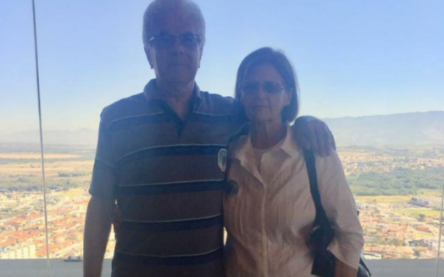

Todos querem o perfume das flores,
mas poucos sujam suas mãos para cultivá-las.
O jardim
Foi o tempo que dedicaste à tua rosa que a fez tão importante.
As orquídeas nos ensinam muito sobre beleza, efemeridade, paciência e certeza.
Se não houver frutos, valeu a beleza das flores. Se não houver flores, valeu a sombra das folhas. Se não houver folhas, valeu a intenção da semente.
Liberdade é a fruta no quintal e a semente cultivada, a brisa fresca e o cintilar do sol...
Euclides e Joana Ferrarezi
Sobre Nós
Uma família que ama a simplicidade e a natureza.
